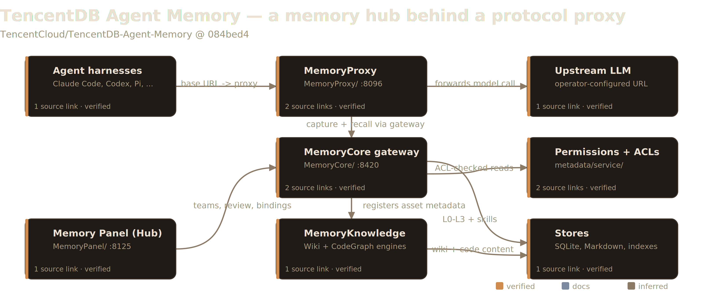
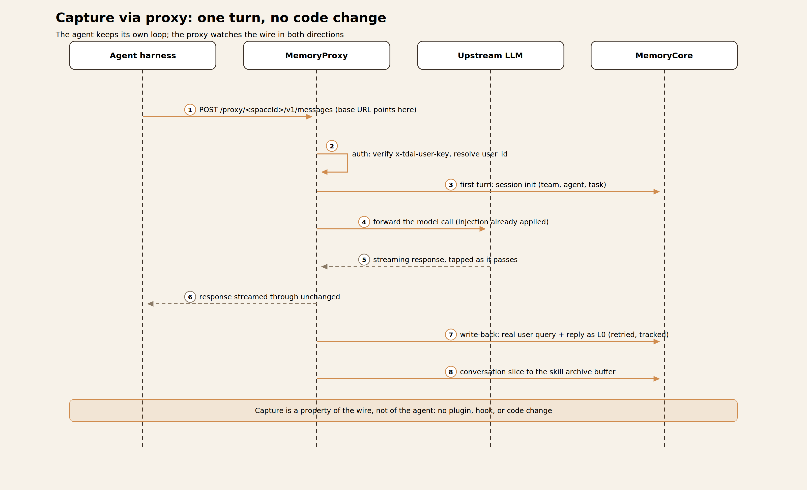
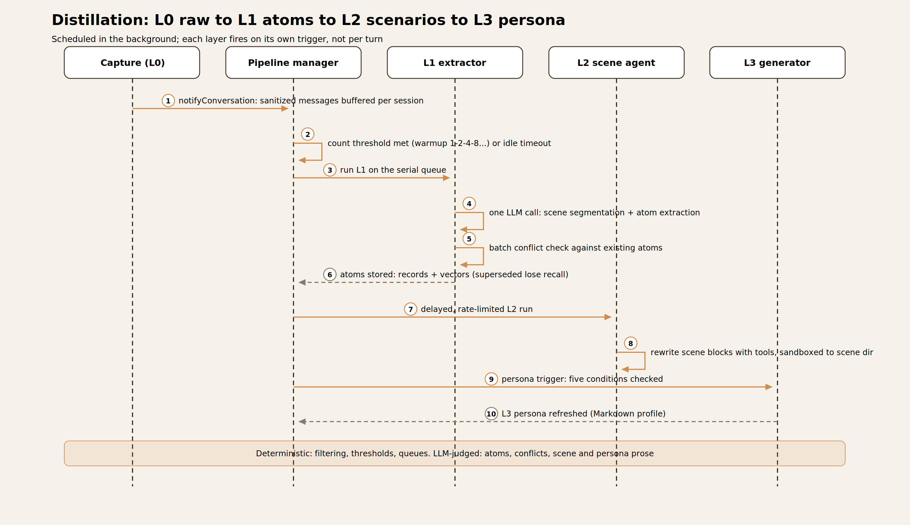
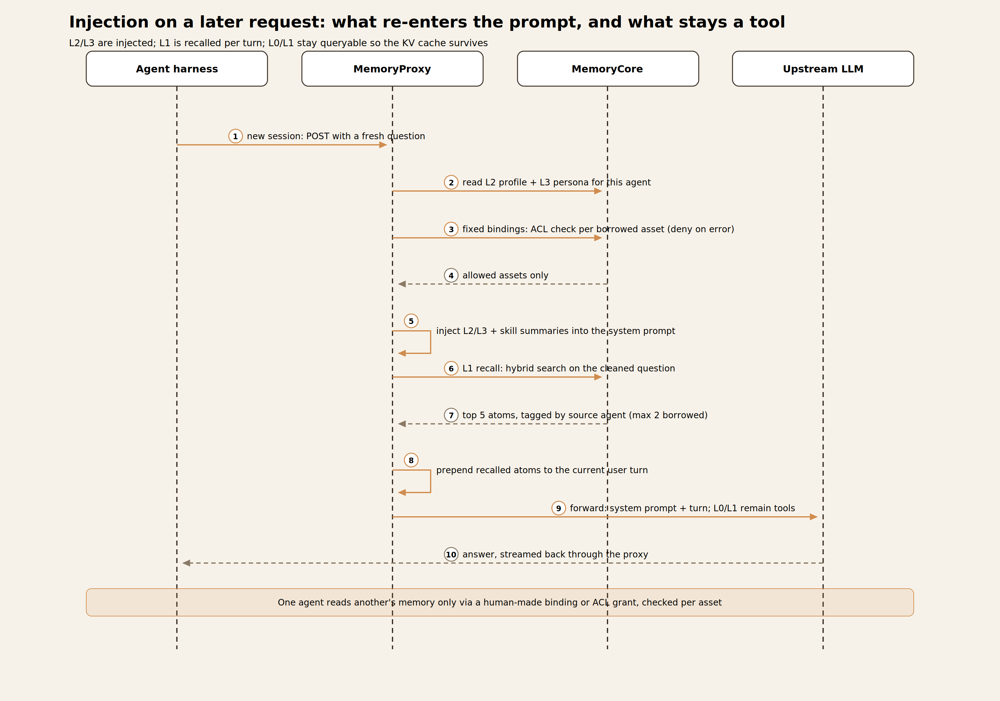

Series framing. This is a Field Notes piece, not a numbered teardown. Every teardown in this series dissects a system that runs an agent: a loop, tools, approvals, a session lifecycle. TencentDB Agent Memory runs none of those — its own README says so in one sentence: "Memory doesn't run the Agent loop; it ensures the next iteration inherits the previous one's results." It is a team memory hub: a protocol proxy that captures conversations from any agent pointed at it, a background pipeline that distils them into layered memory, and a governed asset library — chat memory, versioned Skills, an LLM-Wiki, and a CodeGraph — that teams share under an explicit visibility model. The loops that consume this memory belong to other harnesses, several of which this series has already taken apart. What TencentDB Agent Memory offers instead is a complete, source-readable answer to a question every teardown has touched from the read side: what happens if memory is a service on the wire, not a feature inside the loop? That is a Field Notes question, and it is the one this piece answers.
Pin:
TencentCloud/TencentDB-Agent-Memory@v2.0.3, commit084bed45cad6bb7f877455082cee82835d65671a(2026-10-26), MIT. Cloned and read, never executed. The vendor's benchmark figures are its own and are flagged as vendor claims wherever they appear.

The system is easiest to hold as four services arranged around a single idea — that experience should accumulate in one place and be equipped to agents, rather than re-learned by each of them:
/v1/chat/completions and Anthropic's
/v1/messages. It authenticates, initialises sessions, injects memory,
forwards the call, writes the conversation back, and reports usage. It
persists no memory itself.1The separation matters for the same reason it did with Hy Memory: the claims attach to different layers, and each layer can be checked in source on its own.
The integration is a configuration change, not a project. Point the agent's
base URL at http://<proxy>:8096/proxy/<spaceId>/v1/... — spaceId names
the memory instance — and leave the model and key settings as they were.
The proxy runs both protocol pipelines from one set of stages: auth,
a short-circuit for internal service accounts, session initialisation,
injection, rate limiting, forwarding, asynchronous extraction, and
reporting.13 Because it terminates the protocol rather than
sniffing it, it can act on the call in both directions.

Three details of the capture side repay attention.
Session init is the one visible intrusion. The first request in a new
session can be answered with an interactive form — pick a team, then an
agent, then a task — and the result is appended to the system prompt as a
session-context block on later turns. Headers (x-team-id, x-agent-id,
x-task-id) pre-select the answers and skip the form, which is how a
managed rollout avoids interrupting anyone. The hub, not the agent,
decides which team's memory a first request joins; the header path is the
mitigation, and it is worth knowing it exists before deploying the form to
a team.
Write-back is selective about what a "conversation" is. Coding agents stuff their user messages with harness context — system reminders, runtime snapshots, injected data blocks — that changes every turn and would poison a memory store. So the recorder extracts only the real user query from the last user message, using one shared extractor across adapters, and writes that plus the assistant's reply to MemoryCore as L0.4 The same care appears in Core's capture path, which sanitises messages to strip injected tags — so memory recalled into a conversation cannot re-enter later as fresh evidence of itself.
The write is fire-and-forget, but not careless. On a streaming call the write-back cannot block the response, so it is tracked instead: each write carries up to three retries with backoff, pending writes are drained on shutdown, and the module's header reasons plainly about the trade-off — a duplicate L0 is acceptable (the distillation below is idempotent per content hash), a dropped one is a permanent hole.5 A second, separate write-back accumulates conversation slices for Skill extraction, counted by tool calls rather than turns.
Failure behaviour is layered and, with one exception, open. Telemetry and billing channels are explicitly off the business path ("any one failing does not affect" the call); the recall path degrades to the current agent's own memory when the control plane is unreachable; proxy state storage degrades Redis/COS → SQLite → filesystem → memory and reports the effective backend on its health endpoint. A failed forward surfaces to the agent as an ordinary upstream error. The exception is authorization, which fails closed — see below.
Raw conversations (L0) are appended as sanitised JSONL, one message per line, and indexed for vector search when an embedding provider is configured. Everything above L0 is scheduled by a pipeline manager, not triggered by the capture hook — the hook's own header states the division: "Extraction is NOT triggered here. The pipeline manager decides when."67

What is deterministic here: filtering, buffering, thresholds, queues, dedup bookkeeping, storage. What is LLM-judged: the atoms, their scene assignment, the conflict outcomes, and the prose of scenes and persona. And the economics are explicit in the deployment shape: the distillation models are configured separately from the proxy's upstream, so an operator prices remembering independently of answering.
Storage follows the same pragmatism. Chat memory defaults to a single
SQLite database — L0 and L1 rows beside vec0 vector tables from
sqlite-vec, with FTS5 for keyword search — while L2 scenes and the L3
persona are Markdown files behind a storage adapter. Tencent Cloud
VectorDB and an experimental MongoDB backend are alternatives, not
requirements.11 Retrieval is hybrid throughout: keyword and embedding
results merged with reciprocal-rank fusion, BM25 available even with no
embedding provider, and results capped by count, character budget, and
timeout so memory cannot crowd out the work it is meant to help.12
The read side has the design's most considered decision in it, and it is a decision about other people's caches. Injecting memory into a system prompt is easy; doing it naively means the prompt changes whenever memory changes, and every upstream KV cache downstream of the change is wasted. So the layers are split by volatility:

Wiki and CodeGraph content follow the "stays a tool" pattern all the way down: agents discover knowledge resources through a two-step tool surface (list, then call) and read pages, source, or impact paths only when the task needs them. Documents and code are memory assets, but they enter context on demand, not by injection.
Chat Memory, Skills, LLM-Wiki, and CodeGraph are registered uniformly as Memory Assets — each with an owner, a team, a status lifecycle, and a visibility. Two of the four deserve a closer look.
Skills are versioned like code, because they are. A Skill is a
SKILL.md plus resource files, with trigger boundaries, execution steps,
and validation notes. Every change is an append-only version transaction:
copy the head version's resource tree, apply the change, write the new
version row, with content-hash checks that make replays no-ops.14
Skills extracted from conversation traces enter as candidates and are
reviewed by a human in the Panel before they are shared with the team —
the one approval flow in the system, and it guards exactly the asset type
that can tell an agent what to do. The model's own write access to
Skills is off by default. Ownership is checked as a (team, agent) pair,
and a team mismatch is reported as "not found", so probing cannot even
confirm a Skill exists.15
Visibility is a small enum with a strict centre. An asset is
private, team, restricted (precise User / Role / Agent ACLs),
agent, or task.16 One pure decision function resolves every read:
the asset must exist and not be archived; the owner is always
allowed; the caller must be an active team member; then the visibility
gate; then role defaults (team admins can read, write, assign, and share;
members can read); then ACL grants.17 Because the owner check runs
first, private means what it says — a non-owner is denied including
team admins — and the README states the same semantics as a product
promise: "Only the Owner can read — not even team admins." New chat
memory and Skills are private by default; sharing is an explicit
action.18
Through the proxy, this is enforced at recall time rather than merely in the Panel UI: identity comes from the verified per-user key, every borrowed-asset context is ACL-checked individually before its atoms can be recalled, and a check that errors returns deny.19 So one agent reading another's private memory is not a configuration accident waiting to happen; it requires a human-made binding or grant, is capped at two borrowed agents per turn, and fails shut. The proxy also minds its own credential hygiene: bridge calls to Core carry a service token the proxy injects itself, so it never appears in a prompt, and a pipeline fix specifically strips a client-supplied user-key header so it cannot be passed through to the upstream model provider.
The honest summary of the team shape is that whoever operates the hub holds the keys: the upstream LLM credential (the proxy can replace the client's key with its own, per agent if desired, or pass the client's through),20 the service tokens, and the stores. Every prompt flowing through the proxy — including the memory injected into it — goes to the configured upstream, and captured content goes to the configured distillation models. Nothing in the default self-hosted path requires a vendor cloud account. Within the deployment, the controls are real: per-user keys that can be revoked, scrypt-hashed passwords, two-layer roles, private-by-default assets, fail-closed ACLs.
One default deserves plain statement, in the same spirit as the TeamAI
notes in this series: user-key authentication is off in the code
defaults and on in the example configuration. A proxy started casually
on a shared network accepts anonymous traffic and resolves identity to
anonymous. The vendor's own FAQ says to keep auth on when listening
beyond loopback; the finding here is only that the safe setting is a
choice the operator must make, not the one the code makes for them.1
The README's benchmark section reports PersonaMem — a test of whether an agent can correctly apply user information after extended interaction — at 48% without the system and 76% with it, a +59% relative improvement.21 Figures circulating in the vendor's materials outside this repo cite up to 61% token savings and +51% pass rates. None of these results were reproduced for this piece; the savings and pass-rate figures do not appear in the pinned repository at all. They are the vendor's own evaluations of its own system and should be read as vendor claims. The mechanisms above — the cache-aware injection split, the capped recall, the distillation triggers — are in the source and can be assessed directly; whether they add up to those numbers on a given team's workload is a question only that team's measurement can answer.
TencentDB Agent Memory will not replace anything in the teardown series, because — like Hy Memory before it — it does not compete with anything in it. Its contribution is to treat team memory as infrastructure with its own integration surface and its own governance: capture that costs the agent nothing because it lives on the wire; a distillation pipeline whose triggers, queues, and model budget are explicit; an injection design that respects the upstream's cache as a first-class constraint; and a permission model in which "private" excludes even the team's admins and cross-agent recall is a granted, capped, fail-closed privilege. The question it leaves open is the organisational one its design cannot answer: a hub this central makes the team's memory legible and durable — and makes whoever runs it the custodian of everything the team has ever told its agents. That custodianship, more than any benchmark, is what a team is really choosing when it changes one URL.
Read at a pinned commit: TencentCloud/TencentDB-Agent-Memory @ v2.0.3 (084bed4), MIT, cloned and read, never executed. Independent personal project. Views are my own.
The proxy's positioning, pipeline, and auth defaults — it persists
no memory, forwards both protocols, and auth.enabled is false in
code but true in the example config:
https://github.com/TencentCloud/TencentDB-Agent-Memory/blob/084bed45cad6bb7f877455082cee82835d65671a/MemoryProxy/README.md#L44-L55 ↩↩↩
MemoryCore's boundary — the agent is a caller and a metadata entity, never hosted or executed by Core: https://github.com/TencentCloud/TencentDB-Agent-Memory/blob/084bed45cad6bb7f877455082cee82835d65671a/MemoryCore/README.md#L9 ↩
The two protocol runners, OpenAI and Anthropic, in the proxy server: https://github.com/TencentCloud/TencentDB-Agent-Memory/blob/084bed45cad6bb7f877455082cee82835d65671a/MemoryProxy/src/server.ts#L25-L26 ↩
recordTdaiTurn — only the extracted real user query, plus the
reply, is written back as L0:
https://github.com/TencentCloud/TencentDB-Agent-Memory/blob/084bed45cad6bb7f877455082cee82835d65671a/MemoryProxy/src/tdai/recorder.ts#L32 ↩
Pending-write tracking — three retries, shutdown drain, and the duplicate-over-loss rationale: https://github.com/TencentCloud/TencentDB-Agent-Memory/blob/084bed45cad6bb7f877455082cee82835d65671a/MemoryProxy/src/tdai/pending-writes.ts#L12-L14 ↩
performAutoCapture — L0 is written at capture; extraction is the
pipeline manager's decision:
https://github.com/TencentCloud/TencentDB-Agent-Memory/blob/084bed45cad6bb7f877455082cee82835d65671a/MemoryCore/src/core/hooks/auto-capture.ts#L46 ↩
MemoryPipelineManager — serial L1/L2/L3 queues, count and idle
triggers, warmup ramp:
https://github.com/TencentCloud/TencentDB-Agent-Memory/blob/084bed45cad6bb7f877455082cee82835d65671a/MemoryCore/src/utils/pipeline-manager.ts#L212 ↩
The L1 extractor — one LLM call for segmentation + extraction, then batch conflict detection: https://github.com/TencentCloud/TencentDB-Agent-Memory/blob/084bed45cad6bb7f877455082cee82835d65671a/MemoryCore/src/core/record/l1-extractor.ts#L1-L13 ↩
The L2 SceneExtractor — a tool-using agent sandboxed to the scene
directory:
https://github.com/TencentCloud/TencentDB-Agent-Memory/blob/084bed45cad6bb7f877455082cee82835d65671a/MemoryCore/src/core/scene/scene-extractor.ts#L124 ↩
PersonaTrigger.shouldGenerate() — the five gated conditions for
L3 generation:
https://github.com/TencentCloud/TencentDB-Agent-Memory/blob/084bed45cad6bb7f877455082cee82835d65671a/MemoryCore/src/core/persona/persona-trigger.ts#L35 ↩
The SQLite store — L0/L1 rows plus sqlite-vec vec0 tables in one
database:
https://github.com/TencentCloud/TencentDB-Agent-Memory/blob/084bed45cad6bb7f877455082cee82835d65671a/MemoryCore/src/core/store/sqlite/memory-store.ts#L1-L19 ↩
Hybrid recall — keyword + embedding merged with RRF, BM25 available without an embedding provider: https://github.com/TencentCloud/TencentDB-Agent-Memory/blob/084bed45cad6bb7f877455082cee82835d65671a/MemoryCore/src/core/hooks/auto-recall.ts#L430 ↩
TdaiL1RecallInjector — self + up to two borrowed agents, merged
top-5, prepended to the user turn:
https://github.com/TencentCloud/TencentDB-Agent-Memory/blob/084bed45cad6bb7f877455082cee82835d65671a/MemoryProxy/src/injection/injectors/tdai-l1-recall-injector.ts#L21 ↩
Skill versioning — each change is an appendVersion transaction
over a copied resource tree:
https://github.com/TencentCloud/TencentDB-Agent-Memory/blob/084bed45cad6bb7f877455082cee82835d65671a/MemoryCore/src/core/skill/skill-versioning.ts#L1-L12 ↩
Skill permissions — (team, agent) ownership; a team mismatch is reported as not-found: https://github.com/TencentCloud/TencentDB-Agent-Memory/blob/084bed45cad6bb7f877455082cee82835d65671a/MemoryCore/src/core/skill/skill-permission.ts#L1-L12 ↩
AssetVisibility and the asset-type enum:
https://github.com/TencentCloud/TencentDB-Agent-Memory/blob/084bed45cad6bb7f877455082cee82835d65671a/MemoryCore/src/metadata/types.ts#L36 ↩
checkPermission — owner, membership, visibility, role defaults,
ACLs, in that order; private excludes team admins:
https://github.com/TencentCloud/TencentDB-Agent-Memory/blob/084bed45cad6bb7f877455082cee82835d65671a/MemoryCore/src/metadata/service/permission-checker.ts#L43 ↩
The product statement of the visibility semantics — private is owner-only, "not even team admins": https://github.com/TencentCloud/TencentDB-Agent-Memory/blob/084bed45cad6bb7f877455082cee82835d65671a/README.md#L233 ↩
checkAclOrDeny — an ACL check that errors returns deny:
https://github.com/TencentCloud/TencentDB-Agent-Memory/blob/084bed45cad6bb7f877455082cee82835d65671a/MemoryProxy/src/tdai/client.ts#L438 ↩
The upstream credential the proxy holds, and the per-agent override / client-key passthrough rules: https://github.com/TencentCloud/TencentDB-Agent-Memory/blob/084bed45cad6bb7f877455082cee82835d65671a/MemoryProxy/config.example.yaml#L34-L37 ↩
The vendor's PersonaMem benchmark — 48% without, 76% with; the vendor's own evaluation, unreproduced: https://github.com/TencentCloud/TencentDB-Agent-Memory/blob/084bed45cad6bb7f877455082cee82835d65671a/README.md#L275-L277 ↩